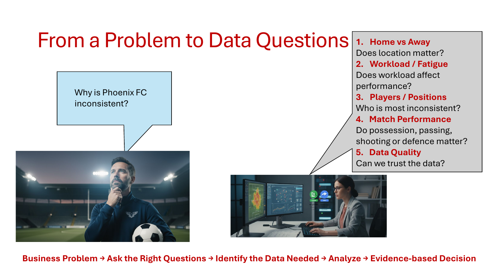
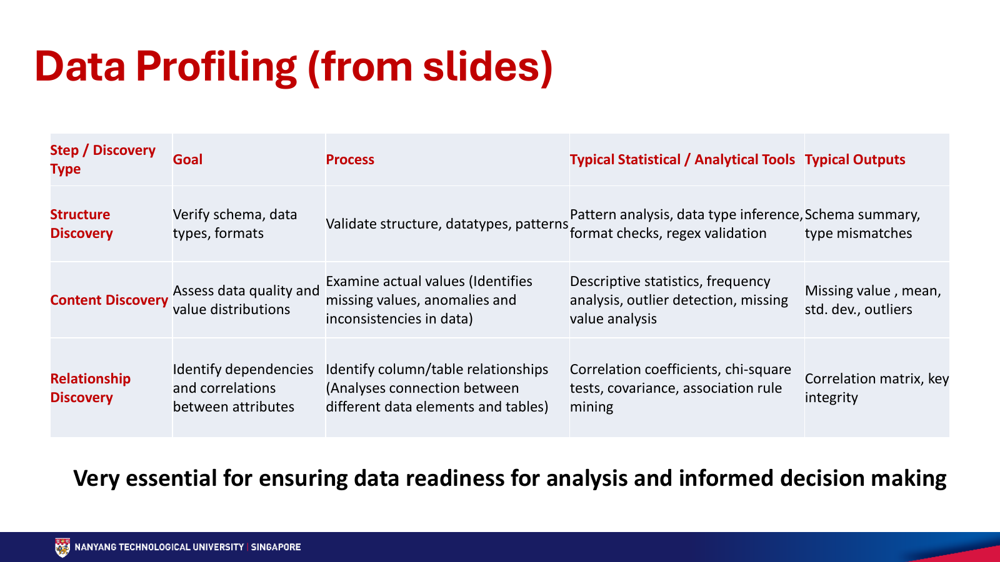
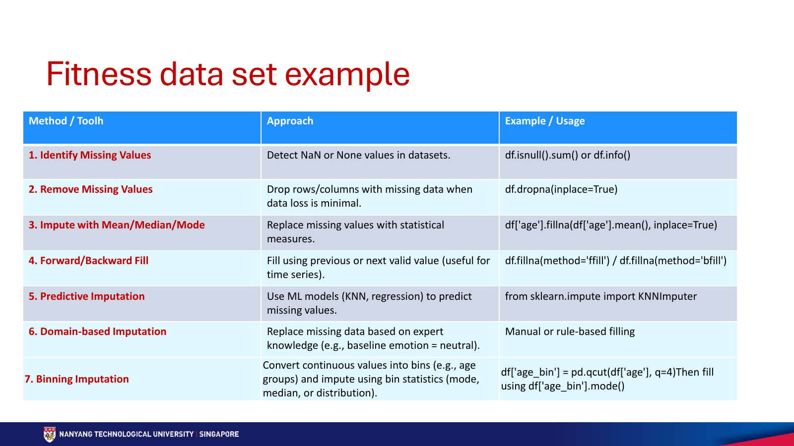
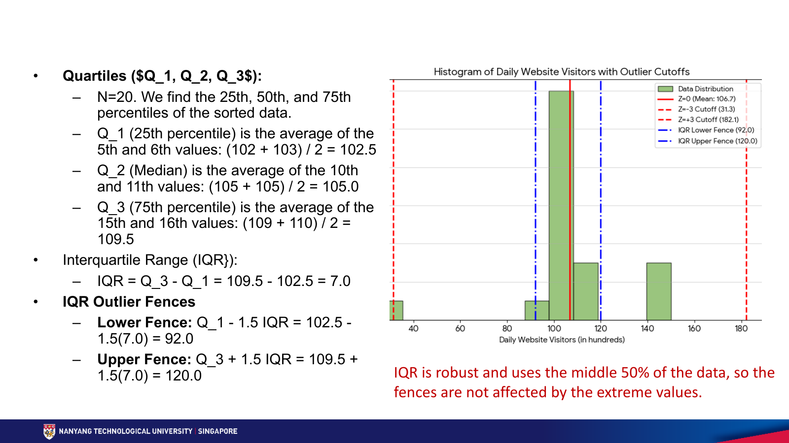

第一周：数据剖析与清洗
先问清楚问题，再检查数据能否回答问题。本周沿着老师的顺序，从 Phoenix FC 足球队案例出发，认识数据类型、三类 Data Profiling、缺失值处理与异常值检测。
来源：Dr. Smitha K G，Week1_DataProfiling and Cleaning_detail.pdf（37 页）及 fitness_missing_data_without_solution.ipynb。页码按 PDF 页序。课件未给出小节编号，以下保留原主题名称与顺序；“学习补充 / 核对说明”用于区分解释与原课件内容。
必须掌握的术语
| 术语 | 中文理解 |
|---|---|
| Data profiling / Data cleaning | 剖析是检查并描述数据问题；清洗是依据检查结果修正问题。发现负年龄与把负年龄标为缺失，是两个不同步骤。 |
| Schema / Feature | Schema 是字段、类型与约束的结构约定；feature 是分析或模型使用的变量。一行通常是一个观测，一列通常是一个变量，但需先确认“一行代表什么”。 |
| Missing value / Imputation | 缺失值表示未记录或未知；imputation 是依据统计量、邻居或规则进行估计填补，不等于找回真实值。 |
| Outlier / Invalid value | 离群值相对多数观测很特殊，可能真实；无效值违反明确约束，例如年龄为负。离群不等于错误。 |
| Distribution / Correlation | 分布描述数值集中位置、离散程度与形状；相关性描述变量共同变化的关系，不能单凭相关系数证明因果。 |
| Data leakage | 训练时使用了测试集或未来信息，例如从全体样本计算填补均值，使评估失去独立性。 |
| Robustness / Contamination | 稳健性指统计量或方法不容易被少量极端观测改变；contamination 在异常检测中用于表达预期异常比例或设定判定阈值。 |
Data science thinking process｜从问题到行动
本章图表 / 方法：Phoenix FC 表现不稳定案例；Ask → Prepare → Process → Analyze → Share → Act（课件第 2–11 页）。
“球队怎样变好”太宽泛，不能直接交给模型。先拆成主客场、工作负荷、球员位置、比赛表现与数据质量等问题，再决定要收集什么。

| 阶段 | 足球案例怎么做 | 需要交付的结果 |
|---|---|---|
| Ask 提问 | 后半场是否体能下降？在哪里失去球权？射门来自哪里？ | 具体问题与指标，例如速度、跑动距离、比赛时段、传球完成率、射门位置。 |
| Prepare 准备 | 比赛 / 伤病记录、GPS 可穿戴设备、事件记录、视频。 | 判断相关性、完整性、可靠性，以及同意、隐私、所有权和允许用途。 |
| Process 处理 | 检查 GPS 丢失和异常距离；统一犯规与丢球定义；用视频交叉核对。 | 可用数据与有意义指标，如每 90 分钟跑动距离、每次防守行动的犯规数。 |
| Analyze 分析 | 比较 70 分钟前后冲刺，检查长传完成率、每次射门 xG、丢球后犯规。 | 图示、比较与关系检验；把“可能疲劳”与“已经证明疲劳造成失利”区分开。 |
| Share 沟通 | 解释证据、含义与优先级。 | Evidence → Insight → Decision，让教练知道为什么考虑某项行动。 |
| Act 行动 | 调整训练 / 换人、传球、射门位置或防守转换策略。 | 执行后收集新数据，衡量影响并迭代。 |
学习补充：xG（expected goals）是对射门进球概率的估计；很多射门但平均 xG 很低，提示射门机会质量可能较低。它仍取决于模型与输入，不是必然进球数。
第 11 页将其连接到机器学习流水线：定义任务 → 获取数据 → 理解与准备（结构、质量、分布、关系、清洗、缩放 / 编码、特征工程）→ 训练 → 评估、部署与维护。收集新数据更贴合问题，但标注成本高；使用现有数据也必须检查质量、相关性及法律和伦理约束。
Structured / Unstructured Data｜认识数据类型
本章图表 / 案例：汽车评价与广告销售表、时间序列、MRT 网络，以及文本、图片、视频、语音（第 12–20 页）。第 12 页的数据增长数字是课件背景示意，不作为当前实时统计。
| 类型 | 数据组织方式 / 课件案例 | 准备数据时重点检查 |
|---|---|---|
| 结构化表格 | 明确的行列；广告预算与销售额是数值，汽车安全等级等是类别。 | 字段类型、类别编码、单位；数字外观不等于连续数值，例如 ID。 |
| 时间序列 | 按时间记录价格、天气等；多个时刻之间可能有关联。 | 时间戳、频率、顺序与缺测。课件以等间隔序列为例；现实也有不规则采样。 |
| 网络 / 图 | Node 是实体，Edge 是关系；MRT 站点与相连轨道、用户与关注关系。 | 节点 / 边属性与引用完整性；如站点线路、换乘状态，以及区间距离、耗时、方向。 |
| 文本 | 词汇多、语境与顺序重要；bass 可指低音或鱼，讽刺会改变字面情感。 | 分词、词形还原、停用词、embedding 与上下文；这些是方法选项，不是所有任务都必须执行的固定清单。 |
| 图片 | 大量像素及空间邻接关系；像素与人类语义之间有差距。 | 维度、颜色通道、噪声、旋转与光照变化；CNN 学习局部模式，池化不保证对所有变换都不敏感。 |
| 视频 | 宽 × 高 × 通道 × 帧数，兼具空间和时间信息。 | 帧顺序、动作时序、音画融合与事件定位；课件介绍 3D-CNN、RNN / LSTM、追踪和时间分段。 |
| 语音 | 随时间变化的波形，受说话人、情绪、口音与背景噪声影响。 | 频谱图或 MFCC 等特征与降噪；频谱图以时间、频率与能量展示声音，音高不是独立必有的坐标轴。 |
学习补充：结构化数据不等于“只有数值”，非结构化数据也不是“没有结构”。区别在于原始信息能否直接用固定字段描述；图数据可用节点表与边表存储。
Data Profiling｜结构、内容与关系发现
本章图表 / 方法：三类 discovery 对照表、5 条客户记录、描述统计与相关矩阵（第 21–24 页）。

| 类型 | 问题 | 工具与输出 |
|---|---|---|
| Structure discovery | 列名、类型、格式是否符合约定？ | schema、类型推断、正则 / 格式校验；输出类型不匹配、格式异常。 |
| Content discovery | 实际有哪些值？缺失、重复、异常、类别不一致吗？ | 均值、标准差、分位数、频数与缺失分析；输出质量报告和分布摘要。 |
| Relationship discovery | 列之间是否有关联，表之间的键能否正确对应？ | 相关系数、协方差、卡方检验、关联规则与键完整性检查；输出相关矩阵与依赖关系。 |
把课件客户表变成可运行的检查
import pandas as pd
customers = pd.DataFrame({
"ID": [1, 2, 3, 4, 5],
"Name": ["John Doe", "Jane Lee", "Mike Tan", "John Doe", "Sarah Wu"],
"Age": [22, None, -5, 29, 35],
"Email": ["john@gmail.com", "jane_lee@gmail.com", "mike_tan",
"john@gmail.com", "sarah@yahoo.com"],
"Country": ["Singapore", "SG", "Malaysia", "Singapore", "USA"],
"Revenue": [500, 120.5, 85, 500, 900],
"Product_Views": [15, 8, 25, 15, 5],
})
print(customers.shape) # (5, 7)：行数、列数
customers.info() # 类型与非空数量
print(customers["ID"].nunique()) # 5 个不同 ID
print(customers["Age"].isna().sum()) # 1 个缺失年龄
print(customers["Age"].min()) # -5，需要调查
print(customers.describe()) # 数值摘要
print(customers[["Name", "Country"]].describe(include="object"))
print(customers["Country"].value_counts(dropna=False))
print(customers[["Age", "Revenue", "Product_Views"]].corr())
describe() 的 count 是非缺失数，25% / 50% / 75% 是分位数；类别摘要的 unique 是不同值数，top / freq 是最常见值及其频数。dropna=False 让频数表也显示缺失值。
count() 统计非空值，不能证明唯一性，应使用 nunique()、is_unique 或重复检查。两条 John Doe 的 ID 与年龄不同，只能标为“疑似同一人”，不能仅凭同名删除。第 23 页年龄均值标为 21.5，但按原表重算为 20.25；第 24 页 Age 与 Product_Views 的相关系数标为 −0.908，按该表重算约为 −0.925。corr() 默认给出 Pearson 线性相关系数，不是协方差本身。负年龄、极小样本和成对缺失处理都可能影响结果；不能凭这 5 条记录就推广“越老越少浏览商品”，更不能认为年龄导致浏览量下降。
Golden rule in machine learning｜先划分，再拟合
本章方法：训练 / 测试分离与填补器 fit / transform（第 25 页）。
假设训练集年龄为 20、30、缺失，测试集年龄为 90。训练均值是 25；如果先使用全部已知年龄算均值，就得到约 46.67，测试信息已经影响了训练输入。这就是 data leakage。
import numpy as np from sklearn.impute import SimpleImputer # 自编最小示例：二维数组，每行一个样本，每列一个特征 X_train = np.array([[20.0], [30.0], [np.nan]]) X_test = np.array([[90.0], [np.nan]]) imputer = SimpleImputer(strategy="mean") X_train_filled = imputer.fit_transform(X_train) X_test_filled = imputer.transform(X_test) print(imputer.statistics_) # [25.] print(X_train_filled.ravel()) # [20. 30. 25.] print(X_test_filled.ravel()) # [90. 25.]
fit 学习训练集统计量；transform 使用已有统计量。strategy="median" 改用中位数，"most_frequent" 改用众数。验证集和测试集只能 transform；交叉验证时，每个训练折也要单独拟合。这个示例不替配套 Notebook 指定预测目标，Notebook 本身是缺失值处理练习。
Data cleaning｜从发现问题到可靠数据
本章方法 / 案例：八类质量问题与客户表清洗（第 26–27 页）。
| 问题 | 课件案例 / 处理思路 |
|---|---|
| 缺失或不完整 | 缺年龄、缺信号片段；调查原因，再选择删除或估计填补。 |
| 重复记录 | 重复评分会虚增样本数；先定义记录粒度与业务键，再确认是否真重复。 |
| 离群 / 无效值 | 负反应时间、极端心率；先标记核实，区分真实特殊情况与录入 / 传感器错误。 |
| 格式 / 单位不一致 | 摄氏与华氏、日期格式歧义；显式转换单位和日期规则，不能只改字符串外观。 |
| 拼写 / 大小写 | Happy / happy / Hapy；统一大小写与经确认的映射，避免误合并不同类别。 |
| 编码损坏 | é 被错误解码；检查读取与保存编码，不能把乱码当正常类别。 |
| 截断数据 | P01023 被截成 P01；回查来源，不能凭空补齐标识符。 |
| 不必要元数据 | 编辑人、导出时间未必适合做模型输入；仍可能用于审计，应按用途保留。 |
# 接上文 customers；保留原表，清洗写入副本
clean = customers.copy()
clean["Country"] = clean["Country"].str.strip().replace({"SG": "Singapore"})
clean.loc[clean["Age"] < 0, "Age"] = float("nan")
suspected_duplicates = clean[clean.duplicated(subset=["Name", "Email"], keep=False)]
print(suspected_duplicates) # 候选记录，仍需核实身份 / 记录粒度
print(clean.isna().sum()) # Age 现在有 2 个缺失
学习补充：每次清洗记录“原问题 → 规则 → 受影响行数 → 复查结果”。把负年龄转成缺失不代表任务结束，还需要解释下一步如何处理这两个缺失值。
Fitness data set example｜七种缺失值处理
本章图表 / 方法：识别、删除、统计填补、前后填充、KNN、领域规则和分箱（第 28 页；配套 Notebook 第 1–7 节）。

| 方法 | 适用思路 | 限制与参数 |
|---|---|---|
| 1. Identify | isna().sum() 数缺失，isna().mean() 算比例；info() 看类型和非空数。 | 空字符串、空格或 -999 不一定自动认作缺失，要先确认来源约定。 |
| 2. Remove | dropna() 默认删除含任意缺失值的行；subset 限定关键列。 | axis=1 删除列；删除可能改变样本构成。少量缺失单元格也可能分布在很多行。 |
| 3. Mean / Median / Mode | 均值用于较对称数值；中位数更耐极端值；众数用于类别。 | 填补会改变分布、方差和关系；众数可能不唯一。建模时只从训练集计算。 |
| 4. Forward / Backward fill | ffill() 用前一有效值，bfill() 用后一有效值。 | 先确认同一实体和时间顺序；limit 限制连续填补长度。实时预测用未来值 bfill 可能泄漏；边界仍可能缺失。 |
| 5. Predictive / KNN | 利用其他数值特征寻找相似记录，再用邻居估计缺失特征。 | n_neighbors 控制邻居数；weights="distance" 更重视近邻。距离受尺度影响，不能把 Mood 字符串直接输入。 |
| 6. Domain-based | 使用有依据的业务 / 领域规则。 | 缺失运动时长不等于没运动；缺失心情不等于 Neutral。规则必须有记录流程或领域证据。 |
| 7. Binning | 按已知变量分组，再用组内统计量填补另一个缺失变量。 | qcut(q=4) 尝试按分位数分成四组；重复边界可能减少组数或报错。训练集确定边界 / 统计量，准备空组与超范围回退策略。 |
通用语法示例：输入、输出与副本
# 自编小例子，独立于健身 Notebook 的答案
import pandas as pd
sample = pd.DataFrame({
"value": [10.0, None, 30.0, 100.0],
"category": ["A", "A", None, "B"],
})
print(sample.isna().sum())
print(sample.isna().mean() * 100) # 每列缺失比例（百分数）
complete = sample.dropna() # 新表；原表保持不变
filled = sample.copy()
filled["value"] = filled["value"].fillna(sample["value"].median())
filled["category"] = filled["category"].fillna(sample["category"].mode().iloc[0])
# 只有已确认按时间排序的同一对象序列，才考虑前后填充
series = pd.Series([1.0, None, None, 4.0])
print(series.ffill(limit=1).tolist()) # [1.0, 1.0, nan, 4.0]
print(series.bfill(limit=1).tolist()) # [1.0, nan, 4.0, 4.0]
语法说明：课件中的 df['age'].fillna(..., inplace=True) 改为显式列赋值，前后填充写作 ffill() / bfill()，更便于看清修改对象。以上统计填补只演示方法；如果接入模型评估，仍要遵守上一节训练集拟合规则。
qcut(age) 再取年龄箱众数，只能提供类别层面的估计，不能直接恢复数值年龄。健身练习中 Age 没有缺失，可考虑用已知 Age 分组来估计其他变量，并说明组内样本太少时如何回退。Outlier detection｜从公式到方法选择
本章图表 / 方法：20 天网站访客示例、Z-score 与 IQR 阈值比较、Isolation Forest、LOF、DBSCAN 和 One-Class SVM（第 29–37 页）。
Z-score：离均值有几个标准差
z = (x − μ) / σ。常用 |z| > 3 标记候选异常；阈值可调为 2.5 或 4，越低通常越容易标记更多点。适合近似对称、正态的单变量分布；极端值会拉动均值和标准差，可能掩盖其他异常。
IQR：用中间 50% 建立围栏
IQR = Q3 − Q1；下界 Q1 − 1.5 × IQR，上界 Q3 + 1.5 × IQR。它通常比均值 / 标准差更耐极端值，适合偏态数据的初筛，但不能自动识别多变量组合异常。1.5 是惯用系数，不是物理定律。

import pandas as pd
visitors = pd.Series([
25, 95, 100, 101, 102, 103, 103, 104, 104, 105,
105, 106, 107, 108, 109, 110, 112, 140, 145, 150,
])
# 此处明确按这 20 个观测计算总体标准差；pandas 默认 std() 则是 ddof=1
z = (visitors - visitors.mean()) / visitors.std(ddof=0)
print(visitors[z.abs() > 3].tolist()) # [25]
# 复现课件“上下两半分别取中位数”的方法
ordered = visitors.sort_values().reset_index(drop=True)
q1 = ordered.iloc[:10].median() # 102.5
q3 = ordered.iloc[10:].median() # 109.5
iqr = q3 - q1
lower, upper = q1 - 1.5 * iqr, q3 + 1.5 * iqr
print(lower, upper) # 92.0 120.0
print(visitors[(visitors < lower) | (visitors > upper)].tolist())
# [25, 140, 145, 150]
# 比较：Pandas 默认线性插值的四分位数
print(visitors.quantile([0.25, 0.75]).tolist()) # [102.75, 109.25]
Isolation Forest：异常点通常更快被隔离
反复随机选择特征和切分位置，建立多棵树。稀少、不同的点通常用较短路径就能与其他点分开。它不要求正态分布，可用于多变量、复杂数据，但判定取决于特征、样本和参数，并不保证每次恰好找出那四个值。
from sklearn.ensemble import IsolationForest # 接上文 visitors；输入必须是“样本数 × 特征数”的二维数据 X = visitors.to_frame(name="visitors") detector = IsolationForest(contamination=0.2, random_state=42) flags = detector.fit_predict(X) print(X.assign(flag=flags)) # 1 表示正常，-1 表示模型判定异常
contamination=0.2 是教学演示的预期比例，不是由数据证明的真实异常率；random_state 固定随机过程。实际使用应结合业务、人工核对和稳定性验证，不能为了得到想要的数量调比例。
| 方法 | 核心直觉 / 适用方向 | 容易误用的地方 |
|---|---|---|
| Z-score | 距均值多少标准差；近似正态的单变量数据。 | 偏态或极端值使均值 / 标准差失真；标准差为 0 时不可直接除。 |
| IQR | 超出分位数围栏；偏态、单变量初筛。 | 离群仍可能真实；单列规则难捕捉复杂组合。 |
| Isolation Forest | 隔离路径短；大样本、多变量、不规则模式。 | 需要阈值、参数与结果解释，不能等同“自动清除错误”。 |
| LOF | 比较局部邻居密度；相对邻居明显稀疏的点可疑，理论 LOF 接近 1 常表示类似邻居。 | 邻域大小与特征尺度影响结果；局部异常不一定是全局最远点。 |
| DBSCAN | 按邻域半径与最小点数找密集簇；区分核心点、边界点、噪声点。 | 单一半径对密度差异很大的簇不一定合适；被判噪声不等于数据错误。 |
| One-Class SVM | 学习正常样本区域，检测落在边界外的新观测。 | 依赖缩放、核与参数。课件的“超球面”是直觉简化，不应当作所有 OCSVM 的严格几何定义。 |
发现异常后的处理顺序：标记 → 核对来源和业务 → 判断真实或错误 → 选择保留、修正、截尾或排除，并记录理由。模型分数本身不能替代这一步。
Notebook｜Fitness & Health Tracking 练习
本章方法 / 原题：配套合成健身数据的七个小节。原文件仅提供造表与缺失计数代码，后续小节留空；这里保留练习任务，提供思路和验收标准。
数据共 15 行、8 列：Age、Daily_Steps、Sleep_Hours、Calories_Intake、Water_Intake_Liters、Mood、Workout_Minutes、Heart_Rate。它没有用户 ID 或时间戳，不能假设相邻行属于同一个人的连续记录。
| 原题小节 | 自己完成的小任务 | 检查标准 / 陷阱 |
|---|---|---|
| 1. Identify Missing Values | 运行已有计数，再计算每列缺失率与受影响行数。 | Age、Heart_Rate 无缺失；其余 6 列各缺 1 个。共 6 个缺失单元格，分散在 6 行；每个受影响列缺失约 6.67%。 |
| 2. Remove Missing Values Example | 在副本上比较默认删行与只检查某个关键列。 | 默认完整案例删除后剩 9 行，损失 40%；不能因为只有 6/120 个单元格缺失就说损失很少。 |
| 3. Mean/Median/Mode Imputation | 给数值列和 Mood 分别选择合理方法，并解释原因。 | 已有值应保持不变；报告填补值来源和分布变化；类别不能直接求均值。 |
| 4. Forward/Backward Fill | 观察方法行为，然后判断它是否适合这个数据集。 | 当前无实体 / 时间字段，不能把跨人的值传播当成合理清洗。区分“代码能运行”与“方法有依据”。 |
| 5. Predictive Imputation (KNN Imputer) | 先选数值列，考虑尺度差异与邻居数，再评估填补。 | 步数几千、饮水只有几个单位，距离可能被步数支配；Mood 单独处理，不能用任意编码制造虚假的类别距离。 |
| 6. Domain-based Imputation | 提出一条候选规则，同时写出成立条件与证据。 | 不能无证据把缺失 Workout_Minutes 填 0 或 Mood 填 Neutral；不确定时保留未知并说明。 |
| 7. Binning Imputation | 利用已知 Age 分组，考虑填补另一个变量。 | 说明分箱依据、每组样本数与回退策略；15 行切太多箱会导致估计不稳定。 |
建议练习顺序：先完成 1 和 2，用一句话解释为什么“缺失单元格比例低”并不代表“删行代价小”；再做统计填补。每种方法都从原始 df.copy() 出发，避免前一次填补影响后一次比较。
常见错误
- 跳过业务问题直接清洗：先确认一行是什么、指标单位是什么，以及数据要服务哪个决策。
- 把缺失当 0、离群当错误、同名当重复：三者都需要来源或业务证据。
- 先全量填补再切分：测试集已经参与训练预处理。
- 在无时间顺序的多个人记录间前后填充，或用未来观测预测过去。
- 把相关当因果，或把小样本 / 脏数据的相关矩阵当可靠结论。
- 课件计算与代码默认值不一致时只改答案：应先检查 ddof、分位数插值与缺失值处理口径。
自测与掌握标准
- “球队下半场表现差”如何转成可测量变量？至少说出两种数据来源和一种质量检查。
- 客户 ID 全部不同，但两行姓名和邮箱相同，可以直接删除吗？属于哪类剖析问题？
- 训练年龄 20、30、缺失，测试年龄 90：应填多少？为什么不能用 46.67？
- 已知 Q1=102.5、Q3=109.5，手算 IQR 上下界，判断 25、105、140 是否被标记。
- 健身数据中缺失的运动时长能否填 0？无时间戳时能否对整表 ffill？说明需要补充的证据。
展开自测要点
1：例如分时段冲刺次数 / 速度，用 GPS 与视频交叉核对缺失和时间对齐。2：不能；ID 唯一不证明人唯一，同名也不证明重复，应检查业务键、记录粒度与内容。3：25；只用训练集学习统计量。4：IQR=7、下界92、上界120；25 和 140 是候选离群，105 不是。5：只有明确“未记录即未运动”的规则才能填 0；当前数据没有支持跨行前向传播的时间和实体信息。
掌握标准：能说清“发现了什么问题 → 为什么选此方法 → 它可能引入什么偏差 → 如何验证”，而不只是记住函数名。本页自测是学习补充，不代表老师公布的考题或考试范围。
来源与代码口径
主内容按 Week 1 PDF 第 2–11、12–20、21–24、25、26–28、29–37 页整理；健身练习按原 Notebook 第 1–7 节整理。保留原课件截图，另将数值不一致与概念简化标为“核对说明”。示例代码与自测为学习整理，不是老师提供的 Notebook 解答。
API 核对：Pandas quantile 的插值口径、KNNImputer 参数、IsolationForest 参数与输出。